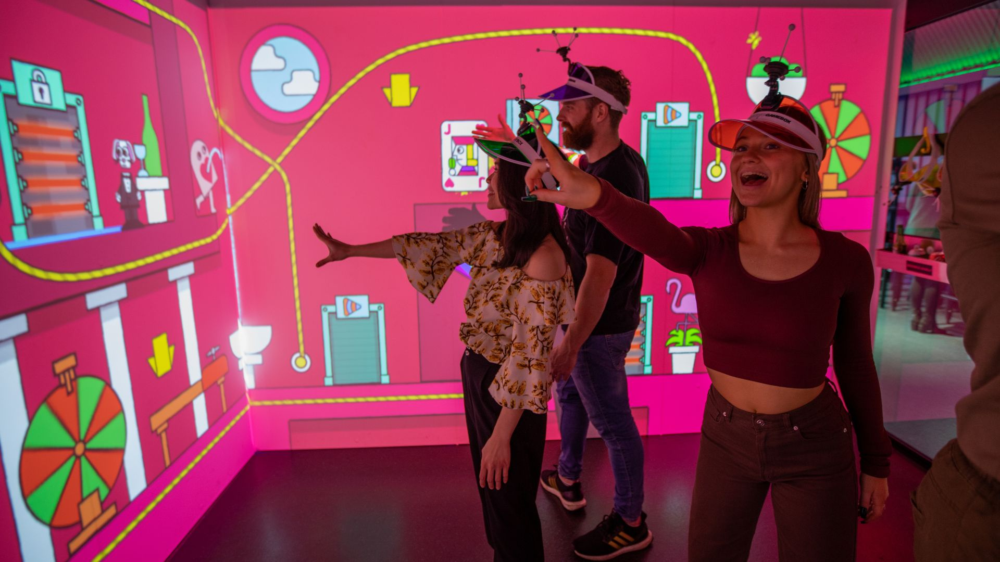
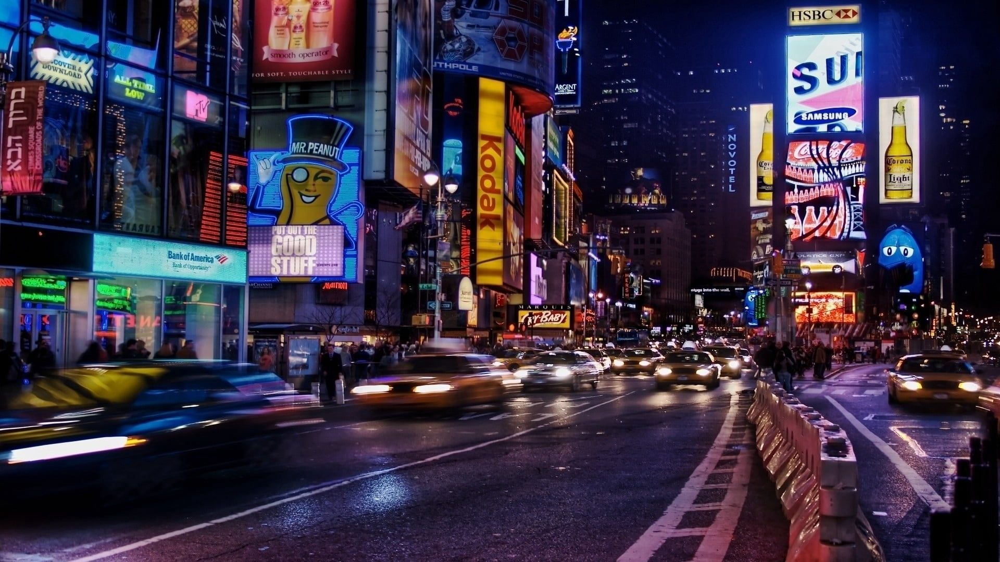
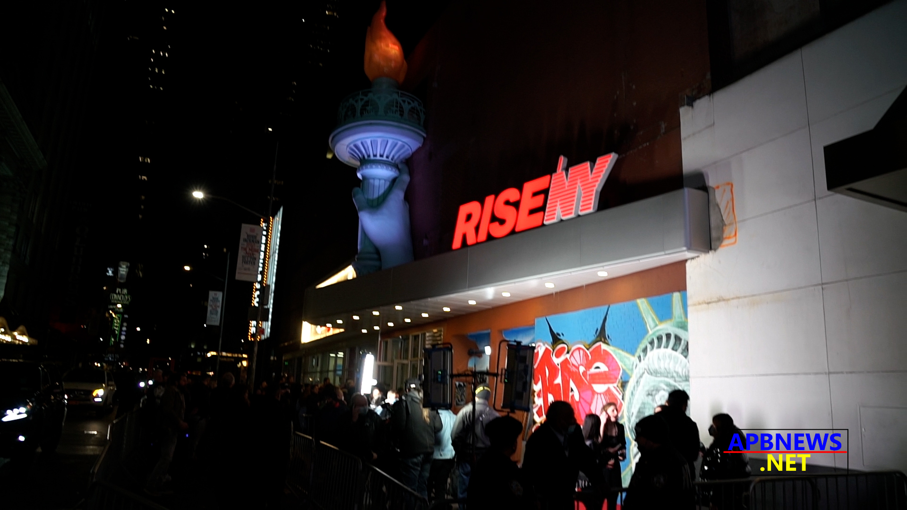

Locais de Destino:

Immersive Gamebox:É um lugar em que quero muito ir pois tem muito conteúdo a ser mostrado, muitos jogos interativos dentro de quatro telas numa sala e pode ter várias ou só uma pessoa. (Para obter mais informações clique na imagem acima)

Times Square:Um lugar onde posso explorar mais afundo Nova York e poderei chegar a vários outros lugares do meu interesse. (Para obter mais informações clique na imagem acima)

RiseNY:Através desse lugar é que vou conhecer a história de Nova York. (Para obter mais informações clique na imagem acima)
| Lugar | Conforto (1-5) | Atendimento (1-5) | Preço (1-5) | Comentários |
|---|---|---|---|---|
| Immersive gamebox | 5 | 5 | 4 | Experiência única e imersiva com ótimo atendimento. |
| Times Square | 4 | 4 | 3 | Um lugar vibrante com muitas lojas, restaurantes e outdoors piscantes. |
| RiseNY | 4.5 | 4.5 | 4 | Uma experiência educativa e inspiradora que celebra a cultura vibrante e a história de Nova York. |
Esses lugares são apenas poucos de muitos lugares que quero visitar, não quero ficar num lugar só, quero dar voltas pelo mundo.